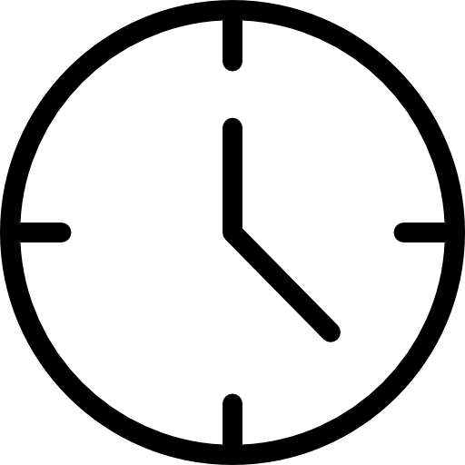

WAKANDA TALKS

Nome Pessoa / Comunidade

Detalhes
Data: 07/08/2019
Hora: 19h
Local do evento: ThoughtWorks São Paulo - Av Paulista, 2300, 4º andar
Talk 1: "De Java para Kotlin - primeiros passos de uma jornada possível no backend"
Palestrante: Rosi & Ailton
Talk 2: Saúde Mental
Palestrante: Jefferson Santos
Fishbowl: Qual o impacto das pequenas comunidades no movimento social negro?
Facilitadoras: Marylly & Ailton.
Compartilhar:

Data e Horário
Dia 03 de setembro de 2019
Das 10h00 às 13h00

Localização
ThoughtWorks - Lounge
Av. Paulista 2300, Conjunto 41
São Paulo - SP